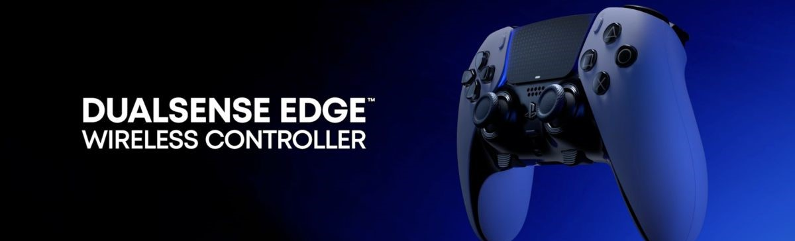
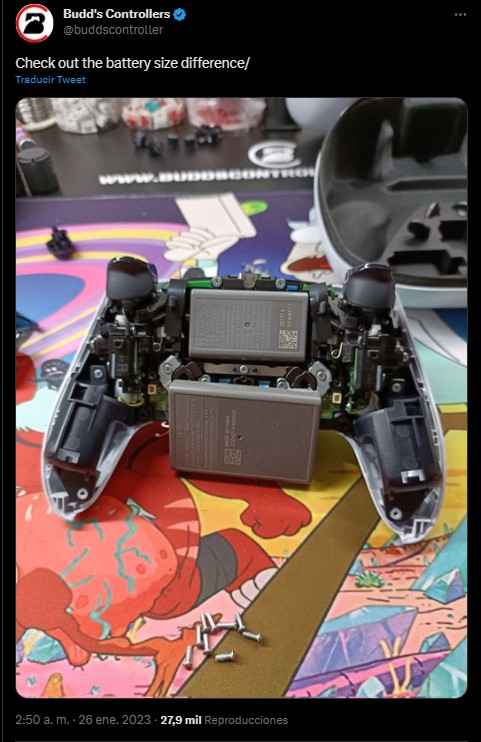

Confirman que el DualSense Edge de PS5 es peor que el DualSense en algo muy importante
El mando de $200 USD presenta nuevas características
El DualSense Edge, el control pro para PlayStation 5, ya está a la venta. Si bien se trata de un mando con un montón de mejores, tristemente tampoco puede considerarse como el hardware superior en todos los aspectos. Lo anterior puesto que se confirmó que será peor que el DualSense en algo muy importante.
El DualSense Edge ya está en manos de un montón de personas y, como puedes imaginar, hubo quienes no se aguantaron las ganas de abrirlo para ver cómo es por dentro. Uno de ellos fue Budd’s Controller, tienda especializada en controles de videojuegos, quien descubrió un interesante secreto del DualSense Edge.
Resulta que el DualSense Edge tiene una batería más pequeña que la del DualSense. No lo decimos únicamente por sus dimensiones, sino también por su capacidad. Resulta que el DualSense Edge tiene una batería de 1050 mAh, mientras que la del DualSense original es de 1560 mAh, lo cual la hace considerablemente mayor. En caso de que no lo sepas, los miliamperios hora (o mAh) son una unidad de carga eléctrica que te dice cuánta energía puede cargar cada batería antes de necesitar una recarga.
Con esto, el DualSense Edge tiene una capacidad de batería que se acerca más a la del DualShock 4 de PlayStation 4 (1000 mAh) que a la del DualSense de PlayStation 5. Esto se traducirá en menor autonomía y tener el mando conectado más tiempo a la consola.
Esta noticia posiblemente sorprenderá poco a los usuarios que han estado al pendiente de las noticias del DualSense Edge. Lo que pasa es que Sony ya había adelantado que el DualSense Edge tendría menos autonomía. Así pues, esto únicamente nos confirma que esto se debe a que la batería es más pequeña y no a que el mando utilice más energía para aprovechar todas sus funciones.
¿Por que el Dualsense tiene peor bateria?
Ahora bien, ¿por qué el DualSense Edge tiene peor batería? Hasta ahora Sony Interactive Entertainment no ha dicho nada al respecto.
Dicho lo anterior, si revisamos las fotografías del DualSense Edge todo parece indicar que Sony buscó una batería de menor tamaño para que hubiera más espacio para el resto de las funciones del DualSense Edge. También podría ser para reducir los costos de producción, pero la primera teoría nos parece la acertada.